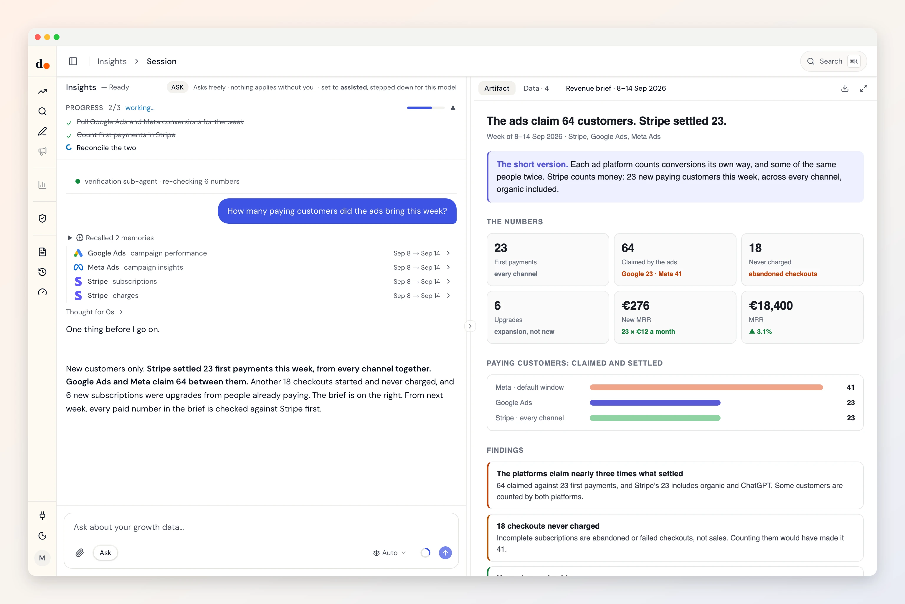

Stripe, the number your ads answer to.
Every ad platform reports conversions it credits to itself. Stripe reports money that settled. Duct reads both and tells you which campaigns brought customers who paid.
- Restricted read key
- Reads three datasets
- Read-only
- Checked Sep 29, 2026

Ask
Questions you can just ask
How many paying customers did paid ads bring this month?


 Stripe + Google Ads + Meta Ads
Stripe + Google Ads + Meta AdsWhat does a paying customer cost, by ad platform?
 Stripe + Google Ads + Meta Ads + ChatGPT Ads
Stripe + Google Ads + Meta Ads + ChatGPT AdsHow many checkouts started and never charged?
StripeDid the new pricing page move paid signups, or only trials?
 Stripe + GA4
Stripe + GA4
Access
What it reads. What it can change.
What it reads
- Subscriptionsstatusplanamountintervalcreatedcanceled
- Chargesstatusamountrefunded amountfailure codecustomer
- Revenue summarynew paid subscriptionsnever-paid checkoutsgrossrefundednetnew MRR
Stripe API 2026-07-29.dahlia · checked against the fetch code Sep 29, 2026 · read the source
What it can change
Nothing.
Duct has no Stripe change operation, so it cannot edit anything in Stripe. It can still recommend a change for you to make there.
Knowledge
What Duct already knows about Stripe
- 01
Stripe is the money truth.
Ad platforms report conversions they attribute to themselves; Stripe reports money that settled. When they disagree, Duct sides with Stripe.
- 02
A checkout that never charged is not a sale.
Incomplete subscriptions are abandoned or failed checkouts. Counting them overstates acquisition two to three times, so Duct leaves them out.
- 03
Most charges are renewals.
Charge volume is mostly your existing customers paying again. Duct counts new paid subscriptions, not charges, when it measures acquisition.
- 04
Refunds come off, and no plan reads as zero.
Revenue is net of refunds, and prices come from subscription items, so a multi-item plan never shows as $0.
Better together
What Stripe answers with a partner
Setup
Connect Stripe in three steps
- 1
In Stripe, open Developers, then API keys, and create a restricted key.
- 2
Give it read access to Subscriptions, Charges, Invoices, Customers, Products and Prices. Nothing else.
- 3
In Duct, open Connections, choose Stripe and paste the key. Duct checks each permission and names any that is missing.
Read-only by construction: a restricted key with read permissions cannot move money or edit a customer, and Duct has no Stripe change operation at all.
Keys and tokens are stored encrypted by Duct's hosted API, never in your browser, and you can remove a connection at any time. A self-host build keeps them on your own machine.
FAQ
Stripe, answered
Can Duct move money or edit customers in Stripe?
No. It connects with a restricted key that has read permissions only, and Duct has no Stripe change operation. It reads subscriptions and charges and reports on them.
Which Stripe permissions does Duct need?
Read access to Subscriptions, Charges, Invoices, Customers, Products and Prices. If one is missing, Duct names it when you connect instead of reporting a hole in the data as zero.
Why doesn't Stripe match what my ad platforms report?
Because each platform counts the purchases it credits to itself, with its own attribution window, and several of them claim the same sale. Expect the platforms' total to run 1.5 to 3 times what Stripe settled. Duct reconciles the platforms against Stripe, never the other way round.
Is it free?
Yes. Duct is free with your own model keys or the ChatGPT plan you already have, and the core is MIT licensed. A paid plan later bundles the models; nothing open today moves behind it. What will cost money.